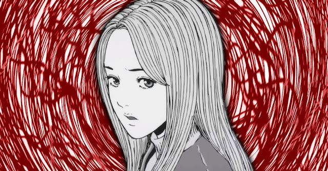
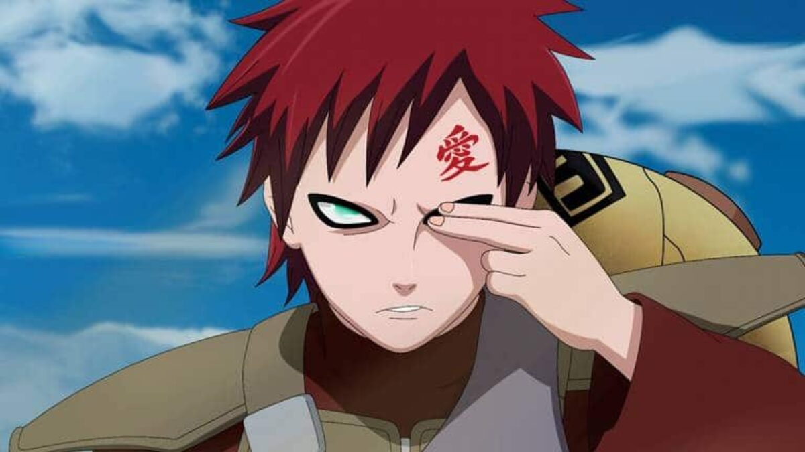

Título do kage: Orochimaru tinha a esperança de ser digno do títulode "ser supremo", incapaz de morrer e capaz de atingir seu objetivo secundário, que era aprender todas as técnicas ninja do mundo, o que normalmente levaria muitas vidas para se conseguir.
jutsu invocação.
Jutsu substituição de corpo.
Jutsu rashomon.
Jutsu Dez Mil cobras
Jutsu de ocultação na superfície
Informações do kage: Orochimaru(大蛇丸, Orochimaru) é um dos Lendários Sannin, junto com Tsunade e Jiraiya, de Konohagakure. Com sua ambição de vida sendo aprender todos os segredos do mundo, Orochimaru buscou a imortalidade para que ele pudesse viver todas as vidas necessárias para realizar sua tarefa.
Times: Time Hiruzen; Time Orochimaru; Time Dosu
Classificação: Anbu; Nukenin; Rank S; Chefe de Aldeia
Parceiro: Sasori; Kabuto Yakushi
Registro Ninja: 002300.

Kage: Naruto Uzumaki
Titulo do kage: (照美メイ, Terumī Mei) Quinta Mizukage (五代目水影, Godaime Mizukage) Talentosa da Névoa Oculta (霧隠れの才媛, Kirigakure no Saien)[2]
Jutsu Sexy.
Rasengan.
Rasen-Shuriken.
Jutsu de Invocação. (Kuchiyose no Jutsu).
Rasengan Gigante (Oodama Rasengan).
(Com Sasuke) Auréola do Furacão de Flecha Negra de Estilo Zero (Kourin Shippuu Shikkokuya Reishiki).
Super Rasengan Gigante (Chou Oodama Rasengan).
Seis Caminhos: Chibaku Tensei.
Super Mini-Bola da Besta com Cauda (Chou Mini Bijūdama).
Rakenshuriken da Bola de Besta com Cauda (Bijuudama Rasenshuriken).
Rasenshuriken de Liberação de Lava (Youton Rasenshuriken).
Rasengan de Liberação de Magnetismo (Jiton Rasengan).
Esfera da Busca da Verdade (Gudoudama).
Rasenrangan.
Rasengan de Liberação de Magnetismo (Jiton Rasengan).
Informações do kage: Naruto Uzumaki é um personagem fictício da franquia de mangá e anime Naruto, criada por Masashi Kishimoto. Servindo como o protagonista homônimo da série, ele é um jovem ninja da vila fictícia de Konohagakure. Os aldeões de sua vila o desprezavam por causa da Raposa de Nove Caudas que foi selada em seu corpo.
Idade: 12-13 na Parte I; 15-17 na Parte II; 32-33 em Boruto
Criado por: Masashi Kishimoto
Primeira aparição: Capítulo 1 do mangá Naruto: Uzumaki Naruto! (1999)
Pais: Minato Namikaze, Kushina Uzumaki
Companheiro: Hinata Hyuga
Kage: mei terumi
Titulo do kage: (照美メイ, Terumī Mei) Quinta Mizukage (五代目水影, Godaime Mizukage) Talentosa da Névoa Oculta (霧隠れの才媛, Kirigakure no Saien)[2]
Estilo Fervura: Jutsu Nevoeiro Sólido.
Estilo Lava: Jutsu Aparição de Fusão
Estilo Lava: Globos de Lava.
Jutsu de Ocultação na Névoa.
Informações do kage: Mei Terumī (照美メイ, Terumī Mei) é a Quinta Mizukage (五代目水影, Godaime Mizukage; Literalmente significa "Quinta Sombra da Água") de Kirigakure. Ela se tornou Mizukage nos últimos anos, depois do reinado terrível de Yagura terminar e tem trabalhado incansavelmente para recriar relações diplomáticas com outras aldeias, bem como as políticas internas de reforma.[3] Vários anos mais tarde, ela dá a posição ao seu ex-guarda-costas, Chōjūrō.

Kage: gaara
Titulo do kage: Gaara (我爱罗, Gaara) é um shinobi de Sunagakure. OShukaku foi selado em seu corpo no dia de seu nascimento, um procedimento que resultou na morte de sua mãe. Considerado como um monstro pela vila e sem ninguém para amá-lo, Gaara passou a desprezar o mundo e começou contando apenas com sua própria força, ganhando o título de Gaara do Deserto(砂瀑の我愛羅, Sabaku no Gaara). Este poder de auto-amor é mais tarde derrotado pelo dedicação inabalável de Naruto Uzumaki para com seus amigos. Desse ponto em diante, Gaara começa a imitar o método de Naruto e muda as opiniões de Sunagakure com relação a ele. Ele eventualmente se torna oQuinto Kazekage (五代目風影, Godaime Kazekage; Literalmente significa "Quinta Sombra do Vento"), uma posição que ele mantém, mesmo depois de o Shukaku ser removido de seu corpo pela Akatsuki.
Saikyou Zettai Bogyo: Shukaku no Tate (Defesa Suprema Absoluta: Escudo do Shukaku).
Saikyou Zettai Bogyo: Shukaku no Tate (Defesa Suprema Absoluta: Escudo do Shukaku).
Suna no Mesou (Mãos de Areia).
Sabaku Rō (Prisão Encadernadora de Areia).
Suna Shigure (Chuva de Areia).
Shukaku no Hoko (Lança de Shukaku).
Suna Shuriken (Shuriken de Areia).
Sabaku Kyū (Caixão de Areia).
Ryuusa Bakuryuu (Avalanche de Areia Movediça).
Suna no Yoroi (Armadura de Areia).
Suna no Tate (Escudo de Areia).
Gokusa Maisō (Prisão do Funeral de Areia).
Ninjutsu: Manipulação da Areia.
Informações do kage: Mei Terumī (照美メイ, Terumī Mei) é a Quinta Mizukage (五代目水影, Godaime Mizukage; Literalmente significa "Quinta Sombra da Água") de Kirigakure. Ela se tornou Mizukage nos últimos anos, depois do reinado terrível de Yagura terminar e tem trabalhado incansavelmente para recriar relações diplomáticas com outras aldeias, bem como as políticas internas de reforma.[3] Vários anos mais tarde, ela dá a posição ao seu ex-guarda-costas, Chōjūrō.
Kage: Ōnoki
Titulo do kage: (照美メイ, Terumī Mei) Quinta Mizukage (五代目水影, Godaime Mizukage) Talentosa da Névoa Oculta (霧隠れの才媛, Kirigakure no Saien)[2]
Jinton: Genkai Hakuri no Jutsu [S-Rank] {Variante cúbico}.
Informações do kage: Ōnoki é o Sandaime Tsuchikage do Universo de Naruto, sendo também conhecido "Ryōtenbin". Esse personagem é um dos usufruidores da Kekkei Tōta Jinton, a qual permite o seu usuário evaporar uma floresta sem grandes dificuldades, isto é, evidenciando sua grande força.